Topic 8.3 · Parallel Lines and Quadrilaterals · Lesson 1 of 5
Angle Facts Recap
Every angle problem you'll meet this year - in parallel lines, bearings, quadrilaterals - is built from five basic facts you already know. Today we sharpen the discipline that separates a right answer from a justified one: naming the exact fact each time, not just guessing the answer that looks about right.
By the end you’ll know…
Angles around a point sum to 360 degrees.
Angles on a straight line sum to 180 degrees.
Angles in a triangle sum to 180 degrees.
Vertically opposite angles are equal.
The base angles of an isosceles triangle are equal.
Every step in an angle calculation is justified by naming the fact used, not by the answer alone.
By the end you can
G3Find missing angles using point, line, triangle and vertically opposite facts, stating the reason each time.
G4Solve multi-step angle problems combining these facts with full reasoning.
Work down the page at your own pace. Write every answer in your book first, then click to check it.
01
Do Now
About 5 minutes
1
Two angles on a straight line are 65° and x°. Find x.
x = 115°.
2
Three angles around a point are 120°, 150° and y°. Find y.
y = 90°.
3
A triangle has angles 50° and 65°. Find the third angle.
65° (180 - 50 - 65 = 65).
4
An isosceles triangle has one angle of 40° at its apex. Find the other two angles.
70° each ((180-40) ÷ 2).
Remember these?
LAST LESSONUse v² = u² + 2as with u = 3, a = 4, s = 2 to find the positive value of v.
v² = 9 + 16 = 25 v = 5
LAST WEEKSolve 2x + 1 ≤ 7 and describe its number line.
x ≤ 3: filled circle at 3, arrow pointing left.
LAST TERMFind the volume of a 6 cm × 3 cm × 2 cm cuboid.
6 × 3 × 2 = 36 cm³.
LAST YEARTwo buses leave together at 9:00, one every 12 minutes, one every 20. When do they next leave together?
LCM(12, 20) = 60, so 10:00.
02
Learn
Read each card, then follow the worked examples one step at a time.
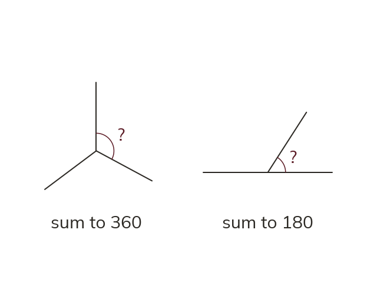
Point and line
Angles around a point sum to 360°. Angles on a straight line sum to 180°. Subtract the angles you know from the total to find the missing one.
Angles around a point sum to 360°. Angles on a straight line sum to 180°. Both are angles that fit together to complete a shape - a full turn or a straight line - so subtracting the ones you know from the total gives the missing one.
Triangle and vertically opposite
The three angles in any triangle sum to 180°. Where two straight lines cross, vertically opposite angles are equal. The diagram must show the lines actually crossing.
The three angles inside any triangle sum to 180°. Where two straight lines cross, the angles directly opposite each other across the crossing point are always equal - these are vertically opposite angles, and the diagram must show the lines actually crossing, not just angles that happen to look similar.
Isosceles triangles
In a triangle marked with two equal sides, the base angles are equal. Name the fact that justifies every answer. The reason is part of the answer.
In a triangle with two equal sides (marked with dashes), the two base angles - the ones opposite the equal sides - are equal. This only applies when the triangle is actually marked as isosceles. Every answer must be written with the fact that justifies it named alongside the number - the reason is part of the answer, not an optional extra.
WORKED EXAMPLE A
Three angles meet at a point: 118°, 96°, and x. Find x.
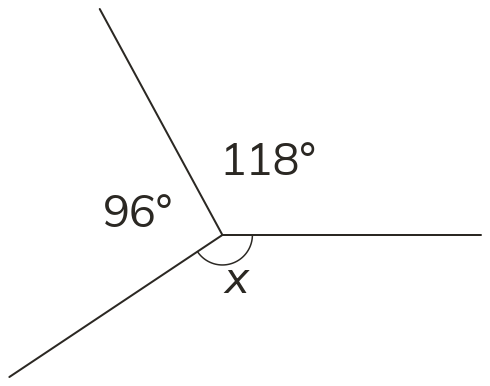
Model118+96=214.
Angles around a point sum to 360, so x=360-214=146°.
Reasonangles around a point.
WORKED EXAMPLE B
Two straight lines cross
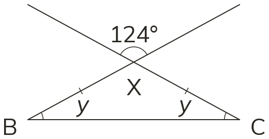
one angle is 124°. An isosceles triangle sits with its apex at the angle vertically opposite 124°, base angles y and y. Find the vertically opposite angle, then find y. Model: the angle vertically opposite 124° is 124° (vertically opposite angles are equal) - this is the triangle's apex angle. y+y+124=180 (angles in a triangle sum to 180), so 2y=56, y=28°. Reason: vertically opposite angles are equal
angles in a triangle sum to 180
isosceles triangle has equal base angles.
YOUR TURN · a
Four angles meet at a point: 87°, 143°, 62°, and z; find z, naming the fact.
z = 360 - (87 + 143 + 62) = 360 - 292 = 68° (angles around a point).
YOUR TURN · b
An isosceles triangle has one base angle of 35°; find the other two angles, naming each fact used.
the other base angle is 35° (base angles of an isosceles triangle are equal), so the apex = 180 - 35 - 35 = 110° (angles in a triangle sum to 180).
03
Check your understanding
Pick an answer. If it's wrong, the feedback tells you which mistake it was.
Two straight lines cross, forming four angles. One angle is 72°. Which value and reason correctly identifies the angle vertically opposite it?
Not quite. That's the angle next to it on the line. The opposite one is equal: 72°.
Yes. Vertically opposite angles are equal: 72°.
Not quite.360° covers all four angles. The opposite one alone is 72°.
Not quite. Right value, but give the fact: vertically opposite angles are equal.
Three angles meet at a point: 140°, 150°, and w. What is w?
Not quite. The angles meet at a point, so they sum to 360°: 360 − 290.
Not quite. A similar size doesn't make angles opposite. Use 360 − 140 − 150.
Yes. Angles at a point sum to 360°: 360 − 140 − 150 = 70°.
Not quite. Right value, but there are no crossing lines. The reason is angles at a point.
A triangle (not marked isosceles) has angles 63°, 65°, and r. What is r?
Not quite. It isn't marked isosceles, so don't assume equal angles.
Not quite. These are the angles of a triangle, which sum to 180°.
Not quite. Right value, but the reason is that angles in a triangle sum to 180°.
Yes.63 + 65 = 128, and 180 − 128 = 52°.
04
Practise
mark as you go
Checkpoint. A point has three angles: 118°, 96° and one more. Separately, an isosceles triangle has a base angle of 51°. Find the missing point angle and the triangle's apex angle, naming the fact you use each time. Show your working - I'll check it before you move on.Show your teacher before you go on
1
Two angles on a straight line are 67° and x. Find x, giving a reason.
Angles on a straight line sum to 180° x = 180° - 67° = 113°
2
Find x, giving a reason.
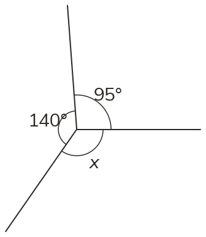
Angles around a point sum to 360° x = 360° - 95° - 140° = 125°
3
A triangle has angles 48°, 77° and x. Find x, giving a reason.
Angles in a triangle sum to 180° x = 180° - 48° - 77° = 55°
4
An isosceles triangle has base angles of 63°. Find its third angle.
The base angles are equal: 63° and 63° 180° - 126° = 54° (angles in a triangle)
5
An isosceles triangle has an angle of 40° between its equal sides. Find its base angles.
180° - 40° = 140° (angles in a triangle) The base angles are equal: 140° ÷ 2 = 70° each
EXT
Four angles around a point are x, 2x, 3x and 90°. Find x.
x + 2x + 3x + 90 = 360 (angles around a point) 6x = 270, so x = 45°
05
Learn
Read each card, then follow the worked examples one step at a time.
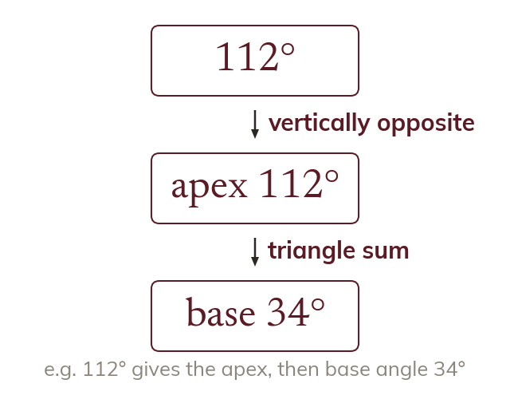
Chaining the facts
Multi-step problems use two or more angle facts, one after another. An angle you find early becomes information for the next step.
Multi-step angle problems use two or more of the point, line, triangle, vertically-opposite and isosceles facts one after another: an early angle you find becomes information you need for the next step.
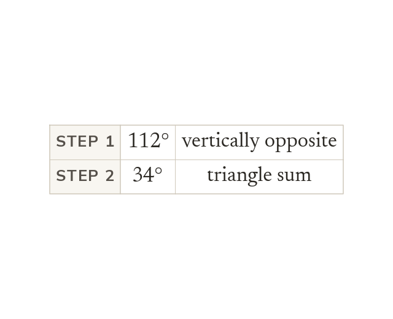
Naming every step
A solution is complete only when every step names its fact. A reader checking your work needs to see the chain, not just where it ends.
A solution is only complete when every step - not just the final answer - names the fact that justifies it, because a reader checking your work needs to see the chain, not just where it ends.
WORKED EXAMPLE C
Two straight lines cross at point P
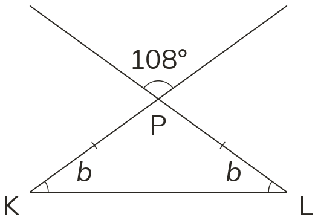
one of the four angles is 108°, and an isosceles triangle is built with its apex at the angle vertically opposite it. Find the vertically opposite angle, then the triangle's base angles. Model: vertically opposite to 108 is 108° (vertically opposite angles are equal) - this is the triangle's apex. Base angles: (180-108) ÷ 2=36 each (angles in a triangle sum to 180; isosceles triangle has equal base angles).
WORKED EXAMPLE D
Two straight lines cross at O, and a ray from O splits one of the four angles into 42° and x. The angle vertically opposite that whole angle is 104°.
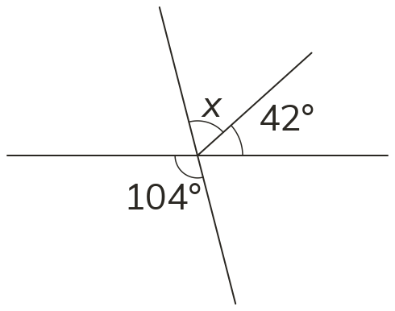
Modelthe angle vertically opposite 104° is made of x and 42°, so x + 42 = 104 (vertically opposite angles are equal)
x = 104 - 42
= 62°.
No single fact joins 104° to xit takes the vertically opposite angle, then the split.
YOUR TURN · c
Two lines cross; one angle is 140°, so find the angle opposite it.
140° - vertically opposite angles are equal.
YOUR TURN · d
Two straight lines cross at Q, and an isosceles triangle has its apex at Q. Find the triangle's base angles, naming every fact you use in order.
the apex = 132° (vertically opposite angles are equal); each base angle = (180 - 132) ÷ 2 = 24° (angles in a triangle sum to 180, then the two base angles are equal).
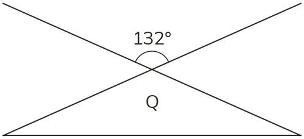
06
Check your understanding
Pick an answer. If it's wrong, the feedback tells you which mistake it was.
Two lines cross, and one angle there is 116°. The angle opposite it is the apex of an isosceles triangle. Which reasoning is complete?
Not quite. Right numbers, but name the fact for each step.
Not quite. Right numbers, but the apex is vertically opposite, not on a straight line.
Yes. Each step names its fact: vertically opposite, then triangle and isosceles.
Not quite. The apex is opposite the 116°, so it's 116°, not 64°.
Find y.
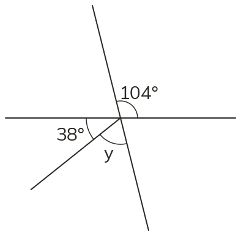
Not quite. y is part of the angle opposite 104°, not the rest of the full turn.
Yes. The angle opposite 104° is also 104°, and 104 − 38 = 66°.
Not quite.76° is the next angle on the line. y is part of the opposite angle: 104 − 38.
Not quite. y is part of the 104° angle, so subtract: 104 − 38.
Two lines cross, and one angle there is 106°. A triangle's apex is vertically opposite it, and its other angles are 39° and m. Find m.
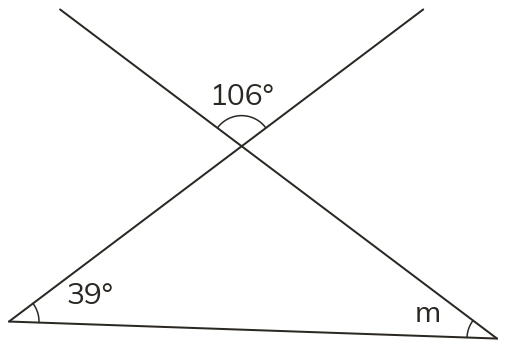
Not quite. It isn't marked isosceles. Use the triangle: 180 − 106 − 39.
Not quite.39° and m aren't on a straight line. Use the triangle's 180°.
Not quite. The apex is opposite 106°, so it's 106°, not 74°: 180 − 106 − 39.
Yes. The apex is 106° (vertically opposite), so m = 180 − 106 − 39 = 35°.
07
Practise
mark as you go
Checkpoint. Two straight lines cross; one angle is 148°. An isosceles triangle has its apex at the angle vertically opposite the 148° angle. Find the triangle's base angles, naming every fact you use. Show your working - I'll check it before you move on.Show your teacher before you go on
1
Two straight lines cross. One angle is 57°. Find the other three angles, giving reasons.
Opposite it: 57° (vertically opposite angles are equal) The other two: 180° - 57° = 123° each (angles on a straight line)
2
In triangle ABC, angle A = 52° and angle B = 71°. BC is extended past C. Find angle C and the angle outside the triangle at C.
C = 180° - 52° - 71° = 57° (angles in a triangle) Outside: 180° - 57° = 123° (angles on a straight line)
3
Two lines cross and one angle is 116°. An isosceles triangle has its apex at the angle vertically opposite. Find its base angles.
Apex: 116° (vertically opposite angles are equal) Base angles: (180° - 116°) ÷ 2 = 32° each (isosceles; angles in a triangle)
4
Two angles on a straight line are 2x and 3x + 20. Find both angles.
2x + 3x + 20 = 180 (angles on a straight line) 5x = 160, so x = 32: the angles are 64° and 116°
5
A triangle has angles x, x + 10 and 2x. Find all three angles.
4x + 10 = 180 (angles in a triangle), so x = 42.5 So 42.5°, 52.5° and 85°
EXT
One angle of an isosceles triangle is 100°. Find the other two. Why must 100° be the angle between the equal sides?
Two 100° angles would already exceed 180° The other two: (180° - 100°) ÷ 2 = 40° each
08
Exit ticket
On paper, on your own, then check
1
State the five angle facts from this lesson - point, straight line, triangle, vertically opposite, and isosceles base angles - giving the value or relationship for each.
Point: 360°; straight line: 180°; triangle: 180°; vertically opposite angles are equal; isosceles base angles are equal.
2
A point has three angles: 142°, 88° and v. Find v, naming the fact you use.
v = 360° - 142° - 88° (angles around a point sum to 360°) = 130°
3
Two lines cross at 116°. An isosceles triangle has its apex at the angle vertically opposite. Find its base angles, naming each fact.
Apex = 116° (vertically opposite angles are equal) Base angles = (180° - 116°) ÷ 2 = 32° (angle sum 180°; isosceles)
Finished? Next lesson: 8.3.2 Angles in Parallel Lines.
Practise more
After the lesson, or whenever you want more
Dr Frost
Log in, then search for a code to practise that skill.
147bUse vertically opposite angles and angles on a straight line or around a point to find a missing angle.
149aKnow the properties of angles in a triangle.
150aDetermine an angle in an isosceles triangle given one of the other angles.